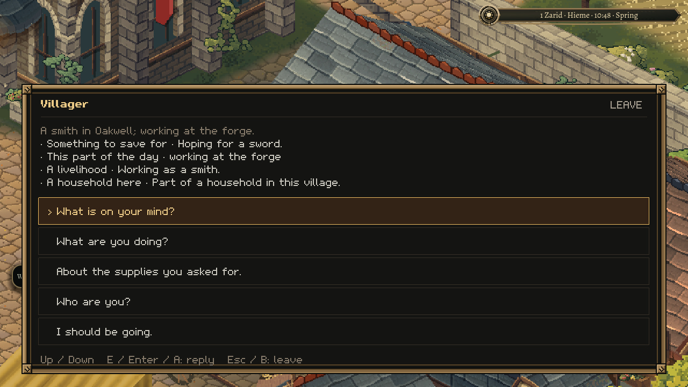
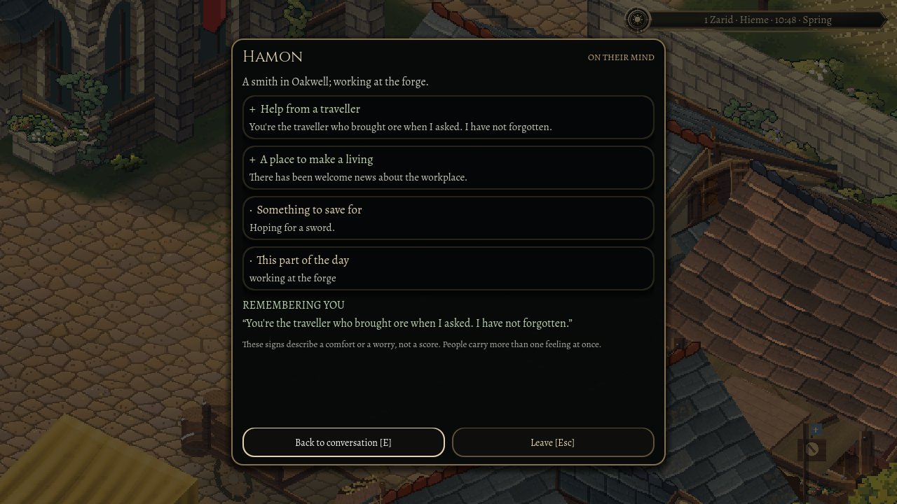

31 October 2026
A town with something on its mind
31 October 2026
A smith can walk to work every morning and still feel like scenery. You need some way to learn what the work means to him: whether he expects to be paid, whether the forge has supplies, whether someone helped when it ran short. Today's work gives Oakwell's existing lives more ways to reach the player.
The first conversation now offers a short account of the person's day and a few things on their mind. Asking further opens a larger thought card. A comfort carries a plus, a worry a minus, and an ordinary concern a quiet dot. Hunger, friendship, unpaid wages and learning a trade can sit beside one another. These are named concerns, with a little explanation, rather than a single happiness number.

A name still needs an introduction. Meeting a stranger does not hand over everyone they know or every accusation in their history. The words come from things that person can express, with unfamiliar people kept unfamiliar.
There are also voices for all fourteen kinds of decision the villagers already make: work, asking for help, practice, theft, fighting, defiance, searching, posting a notice, friendship, departure, quitting, retraining, founding a venture and courtship. A failed attempt has its own words. The street example in this recorded visit is an ordinary day's work; the wider set is checked in the simulation. Hearing a choice depends on being near the actual person, with no wall between you.
One useful failure came from reading quietly. An early engine check found that the catch journal could react behind the thought card. The card now contains those world shortcuts while you read, while its own buttons keep their ordinary keyboard and touch controls. Reading also leaves the conversation's accumulated practice alone.
The visit being recorded is staged: the player starts on legal ground near the smith, the clock is held for inspection, and one piece of ore is supplied. The request itself comes from the working town. Delivering that ore uses the ordinary conversation: it leaves the satchel, reaches the workshop and earns payment from the request's finite funds.
Coming back gives that small transaction a human consequence. The smith recognises the traveller who brought the ore. The expanded card carries the same help as a remembered comfort. Quitting and continuing in a fresh process preserves that exact deed. The traveller walks back to the forge, finds the smith at his work, and hears the same recognition.

Some consequences belong in the street. Small public placards describe the authored forge, herb garden and inn as open, closed, waiting for supplies or behind on wages. A sentence can put an anonymous paper notice at the town's existing public anchor. These notes do not create a new building or a set of solid stocks. A newly founded venture still needs a real place before it can acquire scenery.
The remaining question belongs to a player: after twenty minutes here, can you tell someone what happened to these people, and why? That is the review this work is preparing for.